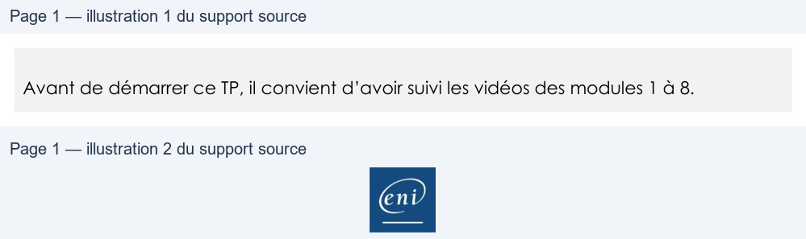

Transcription du document du Drive TSSR. La mise en forme est adaptée au Web ; les compléments IA du portail sont présentés séparément.
Initiation au scripting Bash
TP du Module 08 – Les fonctions
Avant de démarrer ce TP, il convient d’avoir suivi les vidéos des modules 1 à 8.
•
Appréhender l’utilisation de fonctions.
•
Créer un script pour répondre à des besoins fonctionnels.
Créer un script Shell script_M8TP1.sh proposant les actions suivantes, dans le dossier courant pour tout fichier de script terminant par .sh :
• Créer des copies de sauvegarde des fichiers en leur ajoutant l'extension .save
(ex : fichier.sh ==> fichier.sh.save)
• Supprimer tous les fichiers se terminant par .save
• Lister les scripts disposant d’une sauvegarde (vert) et ceux n’en ayant pas (rouge)
• Quitter le script
Le menu doit s’afficher perpétuellement, tant qu’une sortie du script n’a pas été demandée.
Un fichier externe nommé fonctions.fct concentrera les fonctions de sauvegarde, suppression et listing des fichiers. Votre fichier de script principal y fera donc appel.
Indices : il y aura besoin de structures de boucle while, for et conditionnelles if et case
Exemple de menu possible : ------------------------------------------------- Gestion de copies de sauvegarde de fichiers '.sh' ------------------------------------------------- S : Copies immédiates de sauvegarde D : Suppression des fichiers de sauvegarde L : Lister les fichiers Q : Quitter Choisissez une action [S/D/L ou Q] :
Page 1/1
© ENI – Tous droits réservés
